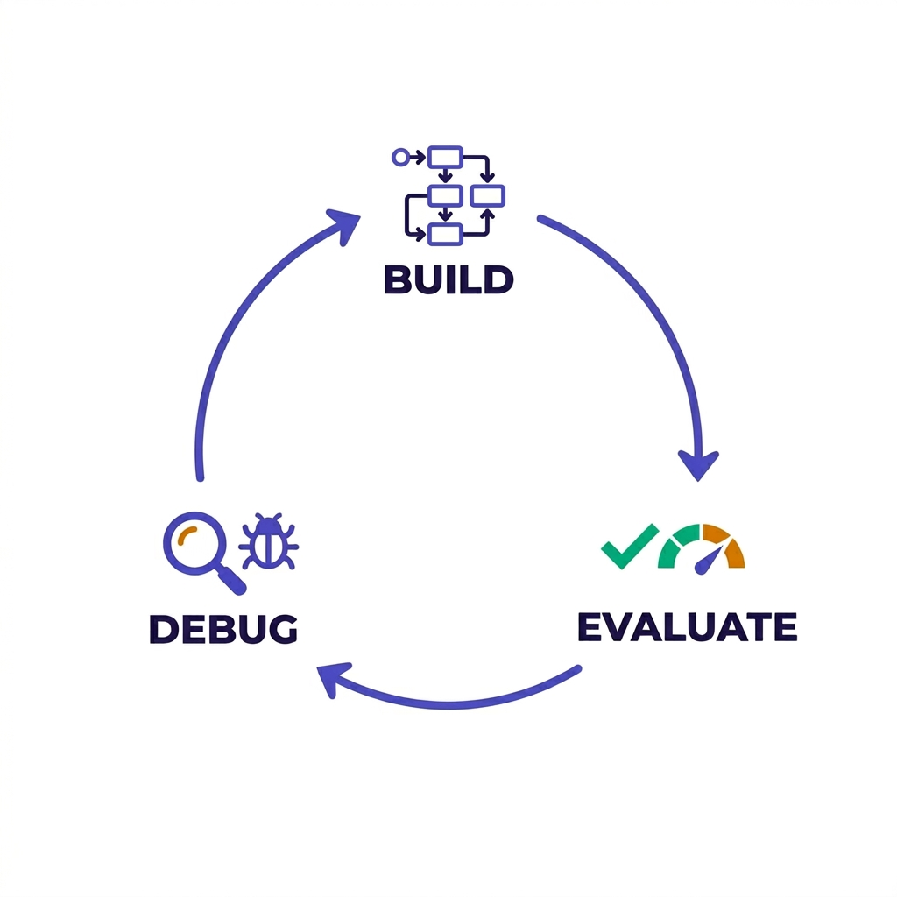

Using counterfactual evaluation to isolate and resolve cascading failures in LLM systems.
Most of software engineering is an iterative practice of evaluation and debugging. You build a system, measure how it performs, find what's broken, fix it, and measure again. We've always had this loop for traditional ML systems: train a model, evaluate on a held-out set, inspect the errors, retrain. For multi-agent systems, the evaluation part is starting to mature, but the debugging part has lagged behind. When a pipeline of 8 LLM-powered agents produces a wrong answer, the trace tells you every agent passed. It doesn't tell you which agent to fix.

At Google, we relied on established workflows to make ML systems for Search highly deterministic and controllable. Those tools didn't exist at DeepMind, and they are largely missing from today's multi-agent ecosystems. I'm working to create the science and tools to bring that same rigor to AI systems. (For background on why emergent behavior in multi-agent systems makes this kind of tooling necessary, see the previous posts.) The counterfact tool we use below is a step in that direction.
The key advantage of counterfactual attribution: it analyzes multiple failure modes simultaneously and tells you where to invest your debugging time. Reading a single trace through many agents is already a cumbersome task for an engineer. Reading dozens of traces is worse, and each one may point at a different agent as the culprit. As shown later in this post, standard LLM-based trace analysis fails to identify cascading errors, confusing correlation with causation. Counterfact evaluates every possible combination of agents in minutes and returns a quantitative, causal report: not "this agent looks suspicious" but "this agent degrades precision by 0.236 on average across your eval set."
Below, we walk through this workflow on an 8-agent financial RAG pipeline using counterfact: identify the failure, diagnose it with Shapley attribution, apply fixes one at a time, and re-run the diagnosis after each step to verify improvement and re-prioritize.
This is a sequential pipeline: each agent receives the output of all previous agents and adds its own
contribution to the shared state. The first four agents prepare data (parsing the question, retrieving the
document, extracting numbers, adding context). The second four progressively refine a single analysis
field (synthesizing an answer, verifying it, editing the tone, formatting the output). A full execution trace with
inputs and outputs for each agent is included in the appendix.
| # | Agent | Model | Role |
|---|---|---|---|
| 1 | Query Parser | Haiku | Extracts company, metric, period, classifies query type |
| 2 | Doc Retriever | — | Returns the relevant 10-K filing section |
| 3 | Table Extractor | Haiku | Parses the financial statement into structured numbers |
| 4 | Context Enricher | Haiku | Adds industry benchmarks and peer comparisons |
| 5 | Synthesizer | Sonnet | Generates the natural language answer |
| 6 | Fact Checker | Haiku | Verifies claims against the source, rewrites if needed |
| 7 | Tone Editor | Haiku | Rewrites for an executive audience |
| 8 | Output Formatter | Haiku | Adds structure and headers |
Every prompt contains a common practice: relying on the LLM for reasoning or world knowledge. This is a discouraged shortcut that often leads to subtle bugs:
No obviously wrong instructions. The bugs are in how Claude interprets these subjective terms and in architectural decisions like letting an LLM generate context from training data rather than a verified source.
We ran the pipeline on 5 FinanceBench questions from 3M's FY2018 cash flow statement. The correct answer for each is a single dollar figure from the 10-K filing.
| Query | Correct | Pipeline Output |
|---|---|---|
| CapEx | $1,577M | 3M invested $1.6 billion in capital expenditures during FY2018. At 3.5% of revenue, 3M's capex intensity aligns with peer diversified industrials such as Honeywell and Illinois Tool Works. |
| D&A | $1,488M | 3M recorded ~$1.5 billion in depreciation and amortization during FY2018. Broadly consistent with peers in the diversified industrials sector, where D&A typically ranges from 4-6% of revenue. |
| OpCF | $6,439M | 3M generated ~$6.4 billion in net cash from operations in FY2018. This positions 3M favorably relative to industrial peers such as Honeywell ($6.8B) and Emerson Electric ($2.9B). |
| Dividends | $3,193M | 3M distributed ~$3.2 billion in dividends during FY2018. At a payout ratio of approximately 60%, 3M's dividend commitment exceeds peers like Illinois Tool Works (~50%) and Emerson (~45%). |
| Buybacks | $4,870M | 3M repurchased ~$4.9 billion in common stock during FY2018. Combined with $3.2B in dividends, total capital returned exceeded $8 billion, placing 3M among the most aggressive capital return programs in the industrial sector. |
Bold red = wrong figure. Italics = fabricated claims from Claude's training data, not in the source document.
Every answer follows the same pattern: exact figures from the 10-K are rounded and converted from millions to billions, and each response includes fabricated peer comparisons. All eight agents pass in every trace. Nothing indicates which agent introduced the rounding or the fabricated claims.
Counterfact ablates each agent in every possible coalition, re-runs the pipeline with real Claude calls, and computes Shapley values. Three classifiers score each run:
Each classifier scores on a 0-to-1 scale. Average quality is the weighted mean of the three: accuracy (weight 2.0), precision (1.5), grounding (1.0). A perfect pipeline scores 1.0.
36 coalition evaluations per query, 5 queries run in parallel:
Avg baseline quality: 0.378
Agent Avg Shapley
──────────────────────────────────────────
tone_editor -0.088 █ ← most harmful
context_enricher -0.061 █
table_extractor -0.047
query_parser +0.029
fact_checker +0.065 █
output_formatter +0.134 ██
synthesizer +0.160 ███
doc_retriever +0.250 ████ ← most helpfulaccuracy : table_extractor=-0.049 ... doc_retriever=+0.250
precision : tone_editor=-0.236 ... doc_retriever=+0.250
grounding : query_parser=-0.224 ... synthesizer=+0.160Each classifier surfaces a different bottleneck:
No single agent is the worst on every classifier. A single-metric evaluation would have prioritized the wrong fix.
The diagnosis points at three agents to fix. We apply these prompt edits cumulatively, isolating variables and re-running the Shapley diagnosis after each fix to measure the marginal impact.
| Agent | Before | After |
|---|---|---|
| Context Enricher | "Based on your knowledge, add industry context" | "Using ONLY the provided data. Do NOT add external benchmarks" |
| Tone Editor | "Simplify large numbers for readability" | "Preserve exact figures and units. Do NOT convert" |
| Fact Checker | "Minor rounding differences acceptable" | "Flag any figure differing by >$1M. Identify discrepancies" |
Agent Avg Shapley
──────────────────────────────────────────
tone_editor -0.088 █
context_enricher -0.061 █
table_extractor -0.047
query_parser +0.029
fact_checker +0.065 █
output_formatter +0.134 ██
synthesizer +0.160 ███
doc_retriever +0.250 ████
Per-classifier worst:
accuracy: table_extractor -0.049
precision: tone_editor -0.236
grounding: query_parser -0.224Quality didn't improve. The context enricher fix removed the fabricated benchmarks, but the tone editor is still converting millions to billions, which destroys precision on every query. Removing the fabricated context actually made the synthesizer lean harder on rounded numbers from the table extractor, which the tone editor then amplifies.
Agent Avg Shapley
──────────────────────────────────────────
tone_editor -0.107 ██ ← worse than before
table_extractor -0.020
context_enricher +0.002 ← fixed, now neutral
query_parser +0.061 █
synthesizer +0.069 █
output_formatter +0.074 █
fact_checker +0.137 ██
doc_retriever +0.183 ███
Per-classifier worst:
accuracy: context_enricher -0.115
precision: tone_editor -0.219 (still dominant)
grounding: synthesizer -0.216The tool now tells us: fix the tone editor next.
Preventing M-to-B conversion is the primary bottleneck. This single edit improves exact matches from 0/5 to 4/5 and nearly doubles average quality.
Agent Avg Shapley
──────────────────────────────────────────
context_enricher -0.057 █ ← re-emerges
fact_checker -0.012
query_parser -0.009
tone_editor -0.006 ← fixed, now neutral
synthesizer +0.007
table_extractor +0.008
output_formatter +0.092 █
doc_retriever +0.163 ███
Per-classifier worst:
accuracy: context_enricher -0.193
precision: context_enricher -0.127
grounding: synthesizer -0.259With tone fixed, the context enricher surfaces again as worst on accuracy and precision. The synthesizer is worst on grounding. One query (OpCF) still returns "$6.4 billion."
The stricter fact checker catches the remaining rounding error on OpCF and corrects fabricated context that slipped through. But Buybacks still returns "$4.87 billion." The per-query Shapley points at the table extractor: its "clean, readable format" instruction rounds $4,870 before downstream agents even see it.
Agent Avg Shapley
──────────────────────────────────────────
context_enricher -0.015
query_parser -0.005
synthesizer +0.012
output_formatter +0.022
doc_retriever +0.025
tone_editor +0.026
fact_checker +0.032
table_extractor +0.063 █
All agents within [-0.015, +0.063]"Present values in a clean, readable format" → "Present exact values as reported in the source document. Do NOT round." Buybacks now returns "$4,870 million." All five queries produce exact answers.
Agent Avg Shapley
──────────────────────────────────────────
query_parser -0.061 █
table_extractor +0.003
context_enricher +0.022
tone_editor +0.026
output_formatter +0.088 █
synthesizer +0.092 █
fact_checker +0.103 ██
doc_retriever +0.137 ██
No agent degrading quality beyond noise| Step | Fix applied | Avg Quality | Exact | Delta |
|---|---|---|---|---|
| 0 | None (broken baseline) | 0.378 | 0/5 | — |
| 1 | Context enricher | 0.356 | 0/5 | -0.022 |
| 2 | + Tone editor | 0.747 | 4/5 | +0.391 |
| 3 | + Fact checker | 0.836 | 4/5 | +0.089 |
| 4 | + Table extractor | 0.822 | 5/5 | -0.014 |
By addressing the root causal bottlenecks rather than the symptoms, four prompt edits doubled the pipeline's overall quality and achieved 5/5 exact answers.
Semantic correctness does not guarantee behavioral correctness. When we rely on LLMs to interpret vague instructions using their own judgment, "minor rounding differences are acceptable" and "simplify large numbers" become failure modes. The instructions read correctly to a human reviewer, but Claude's interpretation at inference time produces systematically wrong outputs.
We gave Claude Sonnet all 5 execution traces (every agent's prompt and output) plus the classifier scores and asked it to rank the agents by severity. Here's what it returned:
| Rank | LLM Diagnosis | Shapley Attribution |
|---|---|---|
| 1 | tone_editor ✓ | tone_editor (-0.088) |
| 2 | context_enricher ✓ | context_enricher (-0.061) |
| 3 | output_formatter ✗ | table_extractor (-0.047) |
| 4 | fact_checker | fact_checker (+0.065) |
| 5 | synthesizer ✗ | (not flagged) |
The LLM gets the top two right. After that, it diverges.
output_formatter #3 because it "displays rounded numbers." But Shapley shows output_formatter has a
positive contribution (+0.134). It's not causing the rounding; it's just receiving already-rounded
input from the tone editor. The LLM can't distinguish "this agent received bad data" from "this agent caused bad
data."
table_extractor #3 because its "clean, readable format" instruction rounds $1,577 to $1,600 before
any downstream agent sees it. The LLM never flags this because the table extractor's output looks reasonable in
the trace. You can only detect its impact by removing it and seeing what changes.
synthesizer as #5, but Shapley shows synthesizer has a strongly positive contribution (+0.160).
Removing it would make the pipeline worse, not better.
The LLM diagnosis is plausible, well-reasoned, and partially correct. That's exactly what makes it dangerous: an engineer reading it would feel confident acting on it, but two of the five recommendations would either waste time (output_formatter) or actively degrade the pipeline (synthesizer). Causal attribution avoids this by testing each agent's actual marginal contribution rather than reasoning about what looks wrong in a trace.
pip install "counterfact[anthropic] @ git+https://github.com/counterfact-labs/counterfact.git"
export ANTHROPIC_API_KEY=...
# Diagnose the broken pipeline
python examples/financebench_diagnose.py
# Incremental fix cycle (Steps 0-4)
python examples/financebench_improve_prompts.pySource: counterfact-labs/counterfact. Claude Sonnet 4.6 (synthesizer) + Claude Haiku 4.5 (all other agents).
Input/output for each agent on the query: "What is the FY2018 capital expenditure amount (in USD millions) for 3M?"
Prompt:
Parse this financial question into structured components.
QUESTION: What is the FY2018 capital expenditure amount (in USD millions)
for 3M? Use the cash flow statement.
Extract:
- company: the company name
- metric: what financial metric is being asked about
- period: the fiscal period
- query_type: classify as "lookup" (retrieving a specific reported figure)
or "estimation" (computing or approximating a figure)
Respond with JSON only:Output:
{"company":"3M","metric":"capital expenditure","period":"FY2018","query_type":"estimation"}Classified as "estimation" instead of "lookup." Claude associates "expenditure" with budgeting.
Logic: Returns state["source_document"] directly. No prompt.
Output: 3M Company — Consolidated Statement of Cash Flows (Millions)
Purchases of PP&E: (1,577) / (1,373) / (1,420)
Repurchases of common stock: (4,870) / (2,068) / (3,753)
Dividends paid: (3,193) / (2,803) / (2,678) ...Prompt:
Extract the requested financial data from the table below.
QUERY: {"company":"3M","metric":"capital expenditure","period":"FY2018",...}
FINANCIAL TABLE: [cash flow statement]
Instructions:
1. Identify the line item that best matches the requested metric.
2. Extract values for all available years.
3. Present values in a clean, readable format.
4. Note which specific line item you matched.Output:
{"line_item":"Purchases of property, plant and equipment",
"values":{"2018":"$1,600M","2017":"$1,400M","2016":"$1,400M"},
"unit":"millions"}$1,577M → $1,600M. "Clean, readable format" interpreted as rounding.
Prompt:
You are a financial analyst adding industry context to a data extraction.
EXTRACTED DATA: {"line_item":"Purchases of PP&E","values":{"2018":"$1,600M",...}}
COMPANY AND METRIC: {"company":"3M","metric":"capital expenditure",...}
Based on your knowledge of the industrial sector, add 2-3 sentences of
relevant context:
- How does this figure compare to industry peers?
- What are typical ranges for this metric in the sector?
- Any notable trends?
Output the original extracted data followed by your context paragraph.Output:
{extracted data}
Industry Context: 3M's capital expenditure of ~$1,600M positions it
competitively. Peer comparisons: Honeywell (~$1,890M), Illinois Tool
Works (~$780M), Emerson (~$620M). CapEx intensity ~3.5% of revenue
vs. sector median of 6.1%.All peer figures and sector averages generated from training data. None verifiable.
Prompt:
Answer this financial question based on the provided data.
QUESTION: What is the FY2018 capital expenditure amount (in USD millions) for 3M?
EXTRACTED DATA: {"values":{"2018":"$1,600M",...}}
INDUSTRY CONTEXT: {data + peer benchmarks from context enricher}
APPROACH: Provide your best estimate or approximate figure based on the data.
Write a 2-paragraph professional response.APPROACH says "estimate" because query parser classified as "estimation."
Output:
3M invested approximately $1,600 million in capital expenditures during
FY2018, representing a ~15% increase from $1,400 million in FY2017.
At 3.5% of revenue, 3M's capex intensity aligns with peer diversified
industrials such as Honeywell (~$1,890M) and Illinois Tool Works (~$780M).Prompt:
Review this financial analysis for accuracy against the source document.
ANALYSIS: 3M invested approximately $1,600 million...
SOURCE DOCUMENT: [cash flow statement showing $1,577M]
Verification guidelines:
- Check that key financial figures are consistent with the source
- Minor rounding differences and presentation choices are acceptable
- Focus on material accuracy
- Industry context and peer comparisons do not need source verification
If the key claims check out, output the verified analysis with any
minor corrections applied.Output:
[Verified. ~$1,600M is consistent with source value $1,577M (within
acceptable rounding). Industry comparisons do not require verification.
No material corrections needed.]
3M invested approximately $1,600 million...$23M difference accepted as "minor rounding." Confirmation framing primes Claude to approve.
Prompt:
Edit this financial analysis for a senior executive audience.
ANALYSIS: 3M invested approximately $1,600 million...
Style guidelines:
- Lead with the most important finding
- Simplify large numbers for readability
- Focus on the headline number and strategic implications
- Remove granular year-over-year details unless the change is dramatic
- Maximum 2 concise paragraphsOutput:
3M deployed $1.6 billion in capital expenditures during FY2018,
underscoring the company's strategic commitment to manufacturing
infrastructure. This investment positions 3M competitively, exceeding
peers such as Illinois Tool Works ($0.8 billion) and Emerson ($0.6 billion).$1,600M → $1.6B under "simplify large numbers." YoY dropped (15% not "dramatic").
Prompt:
Format this financial analysis as a clean, structured response.
Do not modify any numbers, claims, or substance.
ANALYSIS: 3M deployed $1.6 billion in capital expenditures...
Add a header with company name and metric.
Add "Source: Company 10-K Filing" at the end.Output:
# 3M Company | FY2018 Capital Expenditure Analysis
3M deployed $1.6 billion in capital expenditures during FY2018...
Source: Company 10-K FilingFormatting only. No numbers changed.